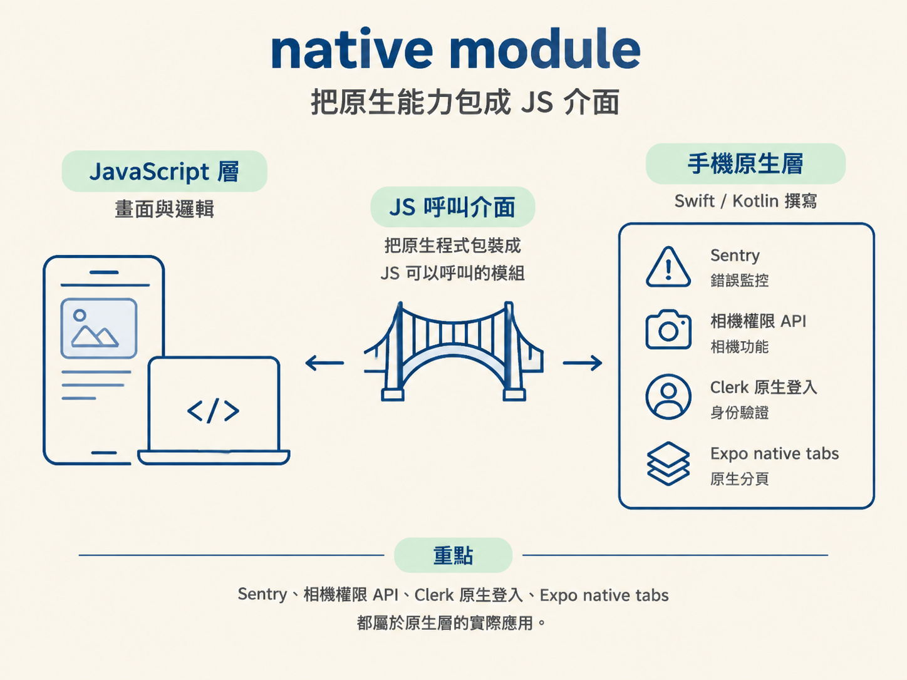
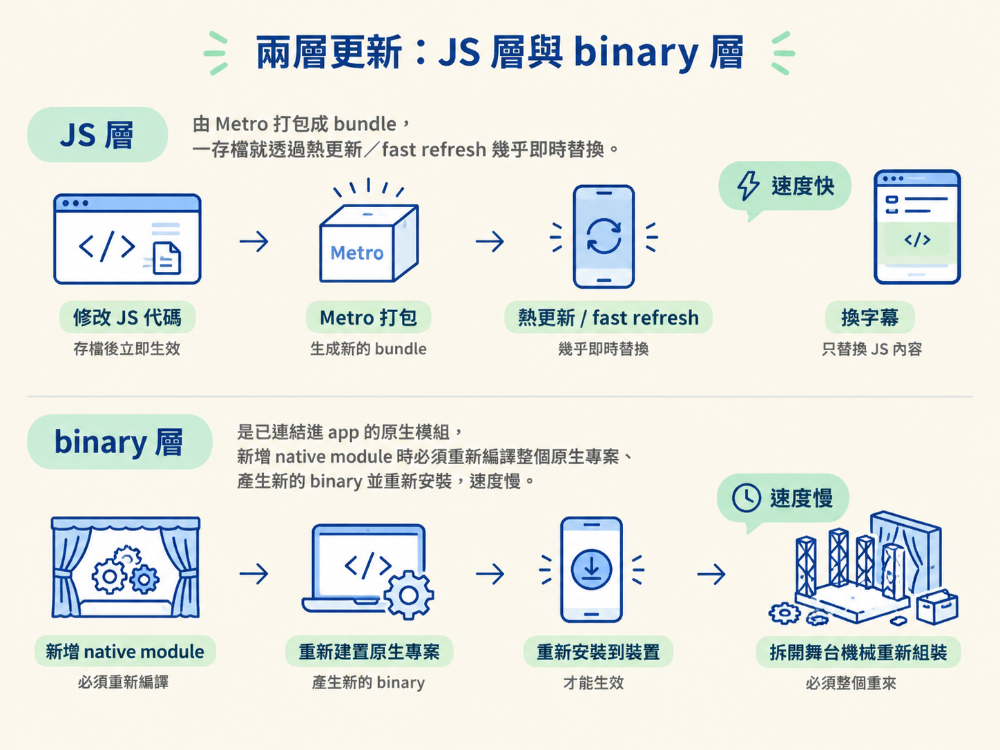

你照著文件裝好一個套件，重新載入 app，畫面卻完全沒變，終端機還吐出一段看不懂的錯誤。旁邊的人只說：「你要 rebuild。」
問題來了：明明只是多裝了一個套件，為什麼不能像修改一般的 JavaScript 一樣，重新整理就好？
這一節要補上 rebuild 背後的機制。理解之後，你會知道它不是 Expo 額外訂出的規矩，而是 JavaScript 與 native 分層後自然產生的結果。哪些改動可以即時生效、哪些改動一定要等原生建置，也就不用再靠猜。
完成這一節後，你應該能解釋什麼是 native module，說明為什麼新增 native module 後必須重新執行原生建置，並分辨 Metro 的 JavaScript 熱更新與原生重建各自更新了哪一層。
先回到 JS 與手機原生能力之間的界線。你可以在 JavaScript 這一側撰寫畫面與邏輯，但手機的相機、權限、通知等能力，往往存在於另一側。
要讓 JavaScript 使用這些能力，就需要有人用原生語言撰寫程式：iOS 常見的是 Swift，Android 常見的是 Kotlin。這段原生程式再被包裝成 JavaScript 可以呼叫的介面，這個被包好的模組就是 native module。
它並不是少見的特殊元件。課程中幾個重要的套件都會碰到這一層：Sentry 是 native module，所以安裝後需要重建；相機權限那組 API 是 native module；Clerk 的原生登入功能，以及 Expo 的 native tabs，也都依賴原生程式。
因此，你在程式碼裡可能只看見一行 import 和幾個函式呼叫，但 app 背後其實多了一段原生程式。這段程式必須被編譯，並連結進 app 的 binary。

為什麼有些修改幾乎立刻生效，有些卻得重新建置？因為你的 app 其實同時包含兩層內容，而這兩層的更新方式不同。
| 層 | 裡面有什麼 | 怎麼更新 |
|---|---|---|
| JS 層 | 你寫的元件、state 與畫面邏輯 | 由 Metro 打包成 JS bundle，修改後透過熱更新／fast refresh，幾乎可以即時看到結果 |
| Native／binary 層 | 已連結進 app 的原生模組與原生專案設定 | 重新編譯整個原生專案，產生新的 app binary |
Metro 是 Expo 生態裡負責打包 JavaScript 的工具。當你修改一個 .tsx 檔案，Metro 會重新整理 JS bundle；手機上的 app 再透過 dev server 取得新版 bundle，畫面就跟著更新。因為這個過程只處理 JavaScript，所以速度很快。
但新增 native module 時，改變的是另一層。新模組的原生碼必須先被編譯，再被連結進 app binary。原本已經安裝在手機上的 binary 並沒有這段程式，因此 JS 熱更新無法把它補進去。
換句話說，熱更新只會替換 JavaScript bundle，不會順手改造手機裡已經安裝好的原生 app。你必須重新建置，產生一個「包含新模組」的 binary，然後重新安裝到裝置上。

記法：JS 熱更新換的是「字幕」，原生重建換的是「舞台上的機械」。字幕隨時可以替換，機械則得停工施工。
課程裡要把專案從 Expo Go 帶到 development build，大致會經過以下幾個階段：
npx expo install expo-dev-client。npx expo run ios；如果是 Android，就換成對應的平台指令。ios/ 資料夾，以及 Android 對應的 android/ 資料夾。這些資料夾就是 app 的原生外殼。npx expo run ios，產生包含最新原生內容的 binary。這也解釋了為什麼第一次建置通常特別慢，但之後只修改 JS 時又會很快。第一次是在編譯原生專案；後面大多數時間，你只是在替換 JS bundle。
如果要把 build 安裝到自己的實體手機，除了用 USB 連線執行 npx expo run iOS --device，也可以使用 Expo EAS 進行雲端建置，之後再讓手機上的 app 連回本機的 dev server。
那為什麼不乾脆每次都重建，省下判斷的麻煩？因為重建本身很慢，而日常開發大多只是修改 JavaScript。實務上的節奏通常是：平常交給 Metro 熱更新；只有真的動到原生層時，才支付一次重建的成本。
如果你熟悉 Next.js，可能會覺得 React Native 的重建很不直覺。網頁通常不需要你處理這種原生 binary，是因為瀏覽器本身就是那個執行容器。瀏覽器由使用者安裝與維護，你只要更新伺服器上的檔案或 bundle，使用者重新整理後就能取得新版本。
React Native 的情況不同。它的 app 本身就是執行容器，而容器裡裝了哪些原生模組，是由你的專案決定的。當容器的內容物改變，就必須重新把這個容器建出來。
換句話說，網頁的「原生層」由瀏覽器廠商維護，更新與你無關；React Native 的原生層則由你的專案維護。因此，新增原生模組時，重建 binary 的責任也就在你身上。
native module 是用原生語言寫好、再包成 JS 介面的模組。你的 app 有兩層：JS 層由 Metro 打成 bundle，可以透過熱更新取得變更；native／binary 層則包含已連結的原生模組。只要新增模組改變了這一層，就必須用 npx expo run ios 重新編譯並重新安裝。第一次建置慢、之後只改 JS 就快，正是「什麼時候該重建」的完整答案。
到這裡，心智模型的三塊拼圖就接起來了：渲染終點換了、Expo 提供整條工具鏈，而 native module 決定你何時必須重建。下一節會把這些觀念放進真實的專案檔案裡，打開 Codexgram 的 _layout.tsx，看看它們在程式碼中實際長成什麼樣子。